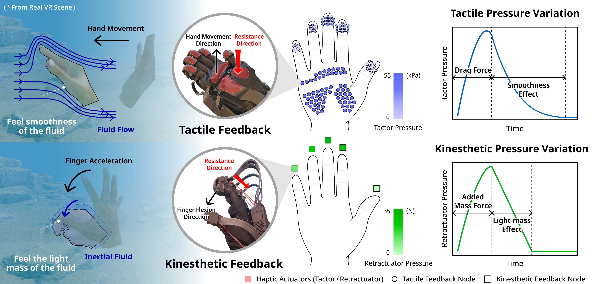
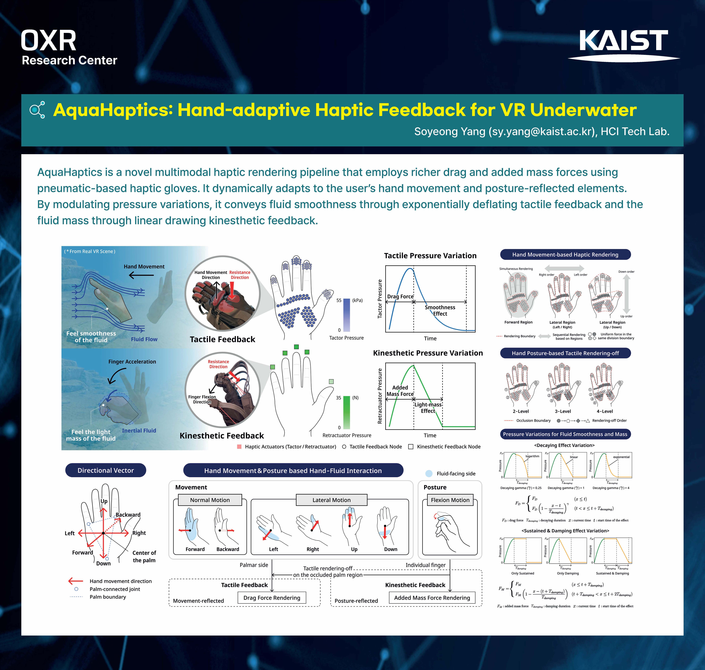
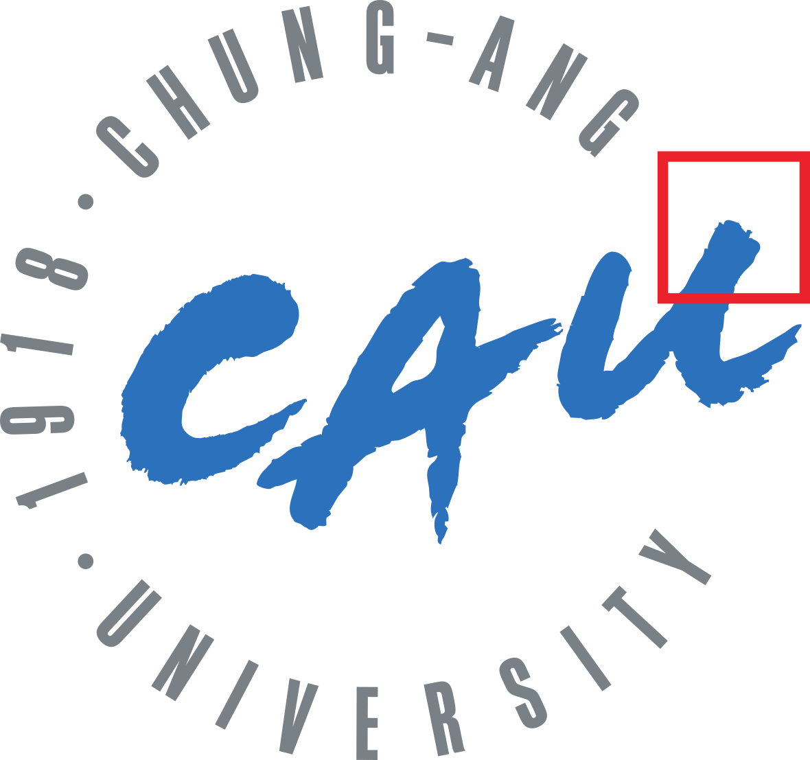
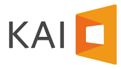

Soyeong Yang
Ph.D. Student @ HCI Tech Lab, KAIST
Soyeong Yang is a Ph.D. student in HCI Tech Lab at Korea Advanced Institute of Science and Technology (KAIST), advised by Prof. Sang Ho Yoon.
Her research interests are Haptic Rendering, Human Perception, and Virtual Reality. She focuses on rendering algorithms to ensure that haptic feedback in VR provides users with cognitively meaningful and enhanced experiences.
She earned her M.S. from KAIST (Metaverse, Culture&Technology), and B.E. from Chung-Ang University (Art&Technology).
Publications
Papers

AquaHaptics: Hand-based Multimodal Haptic Interactions for Immersive Virtual Underwater Experience
IEEE Transactions on Visualization and Computer Graphics (TVCG)
Demo, Poster and Workshop

AquaHaptics: Hand-Adaptive Haptic Feedback for VR Underwater
IEEE International Symposium on Mixed and Augmented Reality (ISMAR 2025)
Experience
Research Experience
Visual Media Lab (KAIST)
Dec. 2021 ~ Feb. 2022
Research Intern
Character Simulation Techniques based on Physics Engine using Deep Reinforcement Learning.

Korea Creative Content Agency & Chung-Ang University
Jun. 2019 ~ Aug. 2019
Technical Researcher
Work Experience

KAI (KAIST Spin-off)
July. 2022 ~ Dec. 2022
Intern, Software Engineer
Development of Real-time Mobile Chat Application based on Metaverse.
Awards & Honors
- KAIST GSMV Student Council (Spring 2024 ~ Spring 2025)
- Student Innovation Challenge Sponsored by LG Electronics: Encouragement Award (3rd) Korea Haptics Conference (Nov. 2023)
- HCI@KAIST Student Committee (Mar. 2023 ~ Feb. 2024)
- KAIST Scholarship Graduate School of Metaverse (Spring 2023 ~ Present)
- CAU Undergraduate Fellowship Dean's List (Spring 2021)
Academic Service
Reviewer
- ACM IMWUT 2025
- ACM Augmented Humans 2025, 2026
Student Volunteer
- ACM CHI 2025